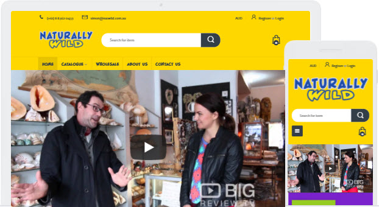
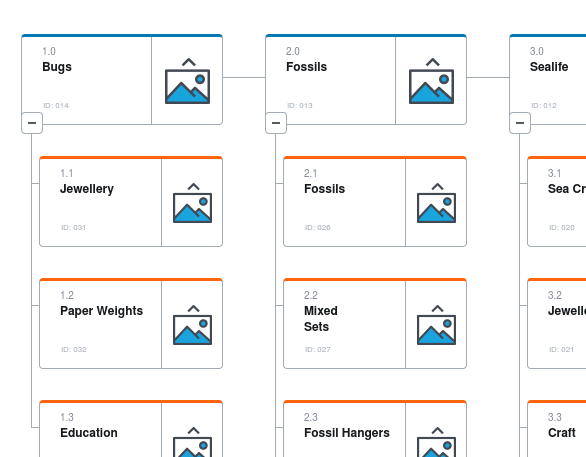
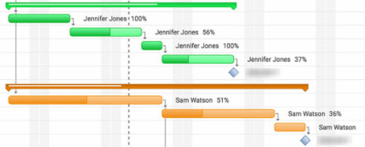
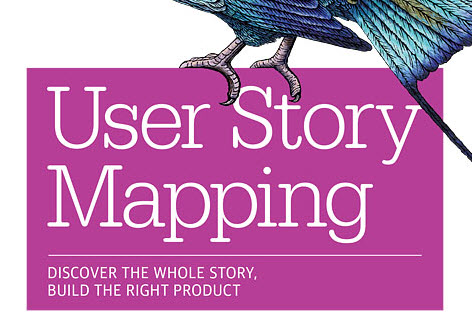
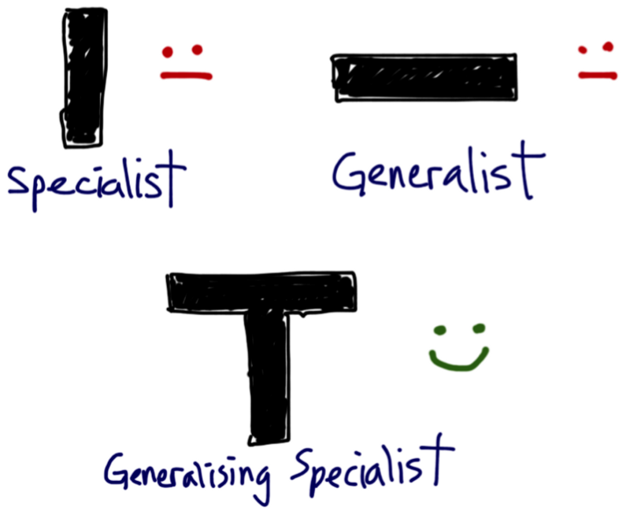

<!DOCTYPE html><html><head><title>Portfolio of Nathan Keen</title><meta charset="utf-8"><meta name="viewport" content="width=device-width, initial-scale=1, shrink-to-fit=no"><link rel="apple-touch-icon" sizes="180x180" href="/apple-touch-icon.png"><link rel="icon" type="image/png" sizes="32x32" href="/favicon-32x32.png"><link rel="icon" type="image/png" sizes="16x16" href="/favicon-16x16.png"><link rel="manifest" href="/manifest.json"><link rel="mask-icon" href="/safari-pinned-tab.svg" color="#5bbad5"><meta property="og:title" content="Nathan Keen's Portfolio"><meta property="og:image" content="images/logo-NK-1xxhdpi.png"><meta property="og:description" content="UX/UI web designer"><meta property="og:url" content="www.nathankeen.id.au"><meta name="theme-color" content="#ffffff"><link rel="stylesheet" href="https://maxcdn.bootstrapcdn.com/bootstrap/4.0.0-beta.2/css/bootstrap.min.css" integrity="sha384-PsH8R72JQ3SOdhVi3uxftmaW6Vc51MKb0q5P2rRUpPvrszuE4W1povHYgTpBfshb" crossorigin="anonymous"><link rel="stylesheet" href="css/fontawesome.css"><link rel="stylesheet" href="css/layout.css"></head></html><body id="top" data-spy="scroll" data-target="#navbot" data-offset="0"> <div class="bglight bgtop"><div class="container"><div class="logo"><figure><figcaption class="figure-caption text-center"></figcaption></figure></div><header><h1 class="text-center purple">Hi! I'm a web designer<br />specialising in visual design<br />& UI/UX engineering</h1></header><!--p.text-center This is my portfolio--></div></div><div class="bgdark"><div class="container"><section><h2 class="anchor" id="UI">User Interface (UI)</h2><p>What design will be intuitive for the user?</p><div class="row"><div class="col-md-6"><div class="card"><!--.card-header= header--><figure><div class="card-body"><figcaption><p class="card-header">The Naturally Wild home page</p><p class="card-text">Built on Shopify, this is set to pay for itself in 6 months, delivering 150x the previous website!</p></figcaption></div></figure><a class="btn btn-primary" href="/portfolio-NatWild2017.html#UI">Read more</a></div></div><div class="col-md-6"><div class="card"><!--.card-header= header--><figure><div class="card-body"><figcaption><p class="card-header">Red Cup Cafe</p><p class="card-text">Built using Joomla, the owner wanted a unique and authentic look</p></figcaption></div></figure><a class="btn btn-primary" href="/portfolio-RedCupCafe2017.html">Read more</a></div></div></div></section><section><div class="row"><div class="col-12"><h3 class="text-center">UI skills</h3><table class="table table-responsive" id="stars"><thead class="font-heading"><tr><th scope="col">Skill</th><th class="text-center" scope="col">Rating</th><th scope="col">Meaning</th><th scope="col">Example</th></tr></thead><tbody><tr><td class="align-middle" colspan="4"><span class="badge badge-primary"><em>Languages</em></span></td></tr><tr><td class="align-middle">CSS3 &amp; earlier</td><td class="align-middle"><span><i class="fas fa-star"></i><i class="fas fa-star"></i><i class="fas fa-star"></i><i class="fas fa-star"></i><i class="fas fa-star"></i></span></td><td class="align-middle"><span class="badge badge-light">I could teach it</span></td><td class="align-middle"><a href="/portfolio-RedCupCafe2017.html#Proto">Red Cup Cafe 2017</a></td></tr><tr><td class="align-middle">SASS/SCSS</td><td class="align-middle"><span><i class="fas fa-star"></i><i class="fas fa-star"></i><i class="fas fa-star"></i><i class="far fa-star"></i><i class="far fa-star"></i></span></td><td class="align-middle"><span class="badge badge-light">I understand most of it</span></td><td class="align-middle"><a href="https://github.com/nathankeenmelb/nk-portfolio">This portfolio website (via Github)</a></td></tr><tr><td class="align-middle">HTML5 &amp; earlier</td><td class="align-middle"><span><i class="fas fa-star"></i><i class="fas fa-star"></i><i class="fas fa-star"></i><i class="fas fa-star"></i><i class="fas fa-star"></i></span></td><td class="align-middle"><span class="badge badge-light">I could teach it</span></td><td class="align-middle"><a href="https://github.com/nathankeenmelb/nk-portfolio">This portfolio website (via Github)</a></td></tr><tr><td class="align-middle">Pug/Jade</td><td class="align-middle"><span><i class="fas fa-star"></i><i class="fas fa-star"></i><i class="fas fa-star"></i><i class="far fa-star"></i><i class="far fa-star"></i></span></td><td class="align-middle"><span class="badge badge-light">I understand most of it</span></td><td class="align-middle"><a href="https://github.com/nathankeenmelb/nk-portfolio">This portfolio website (via Github)</a></td></tr><tr><td class="align-middle">JavaScript (native)</td><td class="align-middle"><span><i class="fas fa-star"></i><i class="fas fa-star"></i><i class="far fa-star"></i><i class="far fa-star"></i><i class="far fa-star"></i></span></td><td class="align-middle"><span class="badge badge-light">I know the basics</span></td><td class="align-middle"><a href="https://codepen.io/nathankeenmelb/pen/GOQwxb">Custom typewriter (via Codepen)</a></td></tr><tr><td class="align-middle">jQuery</td><td class="align-middle"><span><i class="fas fa-star"></i><i class="fas fa-star"></i><i class="fas fa-star"></i><i class="far fa-star"></i><i class="far fa-star"></i></span></td><td class="align-middle"><span class="badge badge-light">I understand most of it</span></td><td class="align-middle"><a href="#"></a></td></tr><tr><td class="align-middle">React</td><td class="align-middle"><span><i class="fas fa-star"></i><i class="far fa-star"></i><i class="far fa-star"></i><i class="far fa-star"></i><i class="far fa-star"></i></span></td><td class="align-middle"><span class="badge badge-light">I'm learning it</span></td><td class="align-middle"><a href="https://reactforbeginners.com/">via Wes Bos</a></td></tr><tr><td class="align-middle" colspan="4"><span class="badge badge-primary"><em>Design</em></span></td></tr><tr><td class="align-middle">Adobe Photoshop</td><td class="align-middle"><span><i class="fas fa-star"></i><i class="fas fa-star"></i><i class="fas fa-star"></i><i class="fas fa-star"></i><i class="fas fa-star"></i></span></td><td class="align-middle"><span class="badge badge-light">I've used it for zonks</span></td><td class="align-middle"><a href="https://www.behance.net/gallery/40807817/Redcup-Cafe-bespoke-web-design-build">Red Cup Cafe 2008 (via Behance)</a></td></tr><tr><td class="align-middle">Adobe Illustrator</td><td class="align-middle"><span><i class="fas fa-star"></i><i class="fas fa-star"></i><i class="fas fa-star"></i><i class="fas fa-star"></i><i class="far fa-star"></i></span></td><td class="align-middle"><span class="badge badge-light">I've used it for zonks</span></td><td class="align-middle"><a href="https://www.behance.net/gallery/41117335/Infographic-Conflict-Resolution">Infographic on Conflict Resolution (via Behance)</a></td></tr><tr><td class="align-middle">Adobe InDesign</td><td class="align-middle"><span><i class="fas fa-star"></i><i class="fas fa-star"></i><i class="fas fa-star"></i><i class="far fa-star"></i><i class="far fa-star"></i></span></td><td class="align-middle"><span class="badge badge-light">I know most of it</span></td><td class="align-middle"><a></a></td></tr><tr><td class="align-middle">Web Interfaces</td><td class="align-middle"><span><i class="fas fa-star"></i><i class="fas fa-star"></i><i class="fas fa-star"></i><i class="fas fa-star"></i><i class="fas fa-star"></i></span></td><td class="align-middle"><span class="badge badge-light">I could teach it</span></td><td class="align-middle"><a></a></td></tr><tr><td class="align-middle">Marketing campaigns</td><td class="align-middle"><span><i class="fas fa-star"></i><i class="fas fa-star"></i><i class="fas fa-star"></i><i class="far fa-star"></i><i class="far fa-star"></i></span></td><td class="align-middle"><span class="badge badge-light">I thoroughly understand it</span></td><td class="align-middle"><a></a></td></tr><tr><td class="align-middle">Print</td><td class="align-middle"><span><i class="fas fa-star"></i><i class="fas fa-star"></i><i class="fas fa-star"></i><i class="far fa-star"></i><i class="far fa-star"></i></span></td><td class="align-middle"><span class="badge badge-light">I thoroughly understand it</span></td><td class="align-middle"><a href="https://www.behance.net/nathankeenmelbourne">Graphic Design portfolio (via Behance)</a></td></tr><tr><td class="align-middle" colspan="4"><span class="badge badge-primary"><em>Frameworks</em></span></td></tr><tr><td class="align-middle">Bootstrap</td><td class="align-middle"><span><i class="fas fa-star"></i><i class="fas fa-star"></i><i class="fas fa-star"></i><i class="fas fa-star"></i><i class="far fa-star"></i></span></td><td class="align-middle"><span class="badge badge-light">I create from scratch</span></td><td class="align-middle"><a href="https://github.com/nathankeenmelb/nk-portfolio">This portfolio website (via Github)</a></td></tr><tr><td class="align-middle">Joomla</td><td class="align-middle"><span><i class="fas fa-star"></i><i class="fas fa-star"></i><i class="fas fa-star"></i><i class="fas fa-star"></i><i class="fas fa-star"></i></span></td><td class="align-middle"><span class="badge badge-light">I could teach it</span></td><td class="align-middle"><a href="/portfolio-RedCupCafe2017.html">Red Cup Cafe 2017</a></td></tr><tr><td class="align-middle">WordPress</td><td class="align-middle"><span><i class="fas fa-star"></i><i class="fas fa-star"></i><i class="fas fa-star"></i><i class="far fa-star"></i><i class="far fa-star"></i></span></td><td class="align-middle"><span class="badge badge-light">I understand most of it</span></td><td class="align-middle"><a href="#"></a></td></tr></tbody></table></div></div></section></div></div><div class="bglight"><div class="container"><section><h2 class="anchor" id="UX">User Experience (UX)</h2><p>What works for the user to make their experience the best?</p><div class="row"><div class="col-md-6"><div class="card"><!--.card-header= header--><figure><div class="card-body"><figcaption><p class="card-header">Naturally Wild Information Architecture</p><p class="card-text">Planning and delivering on IA for 1,500 products and variations</p></figcaption></div></figure><a class="btn btn-primary" href="/portfolio-NatWild2017.html">Read more</a></div></div></div></section><section><div class="row"><div class="col-12"><h3 class="text-center">UX skills</h3><table class="table table-responsive" id="stars"><thead class="font-heading"><tr><th scope="col">Skill</th><th class="text-center" scope="col">Rating</th><th scope="col">Meaning</th><th scope="col">Example</th></tr></thead><tbody><tr><td class="align-middle" colspan="4"><span class="badge badge-primary"><em>Initiation</em></span></td></tr><tr><td class="align-middle">Business Goals</td><td class="align-middle"><span><i class="fas fa-star"></i><i class="fas fa-star"></i><i class="fas fa-star"></i><i class="far fa-star"></i><i class="far fa-star"></i></span></td><td class="align-middle"><span class="badge badge-light">I confidently extract goals</span></td><td class="align-middle"><a href="/portfolio-RedCupCafe2017.html#Neg">Red Cup Cafe 2017</a></td></tr><tr><td class="align-middle">Competitor Analysis</td><td class="align-middle"><span><i class="fas fa-star"></i><i class="fas fa-star"></i><i class="fas fa-star"></i><i class="fas fa-star"></i><i class="far fa-star"></i></span></td><td class="align-middle"><span class="badge badge-light">I chart/graph in my sleep</span></td><td class="align-middle"><a></a></td></tr><tr><td class="align-middle" colspan="4"><span class="badge badge-primary"><em>Planning</em></span></td></tr><tr><td class="align-middle">User Personas/Profiling</td><td class="align-middle"><span><i class="fas fa-star"></i><i class="fas fa-star"></i><i class="fas fa-star"></i><i class="far fa-star"></i><i class="far fa-star"></i></span></td><td class="align-middle"><span class="badge badge-light">I understand most of it</span></td><td class="align-middle"><a href="/portfolio-RedCupCafe2017.html#UX">Red Cup Cafe 2017</a></td></tr><tr><td class="align-middle">User Story Mapping</td><td class="align-middle"><span><i class="fas fa-star"></i><i class="fas fa-star"></i><i class="fas fa-star"></i><i class="far fa-star"></i><i class="far fa-star"></i></span></td><td class="align-middle"><span class="badge badge-light">I understand most of it</span></td><td class="align-middle"><a href="/work-experience.html#Learning">Book review (Jeff Patton)</a></td></tr><tr><td class="align-middle">User Journeys</td><td class="align-middle"><span><i class="fas fa-star"></i><i class="fas fa-star"></i><i class="fas fa-star"></i><i class="far fa-star"></i><i class="far fa-star"></i></span></td><td class="align-middle"><span class="badge badge-light">I understand most of it</span></td><td class="align-middle"><a href="/portfolio-RedCupCafe2017.html#UX">Red Cup Cafe 2017</a></td></tr><tr><td class="align-middle">Accessibility &amp; WCAG</td><td class="align-middle"><span><i class="fas fa-star"></i><i class="fas fa-star"></i><i class="far fa-star"></i><i class="far fa-star"></i><i class="far fa-star"></i></span></td><td class="align-middle"><span class="badge badge-light">I understand some of it</span></td><td class="align-middle"><a href="#"></a></td></tr><tr><td class="align-middle">Specifications</td><td class="align-middle"><span><i class="fas fa-star"></i><i class="fas fa-star"></i><i class="fas fa-star"></i><i class="fas fa-star"></i><i class="far fa-star"></i></span></td><td class="align-middle"><span class="badge badge-light">I know pros &amp; cons of many ways</span></td><td class="align-middle"><a></a></td></tr><tr><td class="align-middle" colspan="4"><span class="badge badge-primary"><em>Prototyping</em></span></td></tr><tr><td class="align-middle">Information Architecture</td><td class="align-middle"><span><i class="fas fa-star"></i><i class="fas fa-star"></i><i class="fas fa-star"></i><i class="fas fa-star"></i><i class="fas fa-star"></i></span></td><td class="align-middle"><span class="badge badge-light">I see dead patterns (6th sense)</span></td><td class="align-middle"><a href="/portfolio-InformationArchitecture.html">Why I say I have a 6th sense in IA</a></td></tr><tr><td class="align-middle">Prototyping, lo-fi</td><td class="align-middle"><span><i class="fas fa-star"></i><i class="fas fa-star"></i><i class="fas fa-star"></i><i class="far fa-star"></i><i class="far fa-star"></i></span></td><td class="align-middle"><span class="badge badge-light">I confidently create</span></td><td class="align-middle"><a></a></td></tr><tr><td class="align-middle">Prototyping, hi-fi (interactive)</td><td class="align-middle"><span><i class="fas fa-star"></i><i class="fas fa-star"></i><i class="fas fa-star"></i><i class="far fa-star"></i><i class="far fa-star"></i></span></td><td class="align-middle"><span class="badge badge-light">I confidently create</span></td><td class="align-middle"><a href="/portfolio-RedCupCafe2017.html#Proto">Red Cup Cafe 2017</a></td></tr><tr><td class="align-middle">Qualitative Research</td><td class="align-middle"><span><i class="fas fa-star"></i><i class="fas fa-star"></i><i class="fas fa-star"></i><i class="far fa-star"></i><i class="far fa-star"></i></span></td><td class="align-middle"><span class="badge badge-light">I understand most of it</span></td><td class="align-middle"><a href="/portfolio-RedCupCafe2017.html#Proto">Red Cup Cafe 2017</a></td></tr><tr><td class="align-middle">Quantitative Research</td><td class="align-middle"><span><i class="fas fa-star"></i><i class="fas fa-star"></i><i class="fas fa-star"></i><i class="far fa-star"></i><i class="far fa-star"></i></span></td><td class="align-middle"><span class="badge badge-light">I confidently create + analyse</span></td><td class="align-middle"><a></a></td></tr><tr><td class="align-middle" colspan="4"><span class="badge badge-primary"><em>Quality Controls</em></span></td></tr><tr><td class="align-middle">Standards/Guidelines</td><td class="align-middle"><span><i class="fas fa-star"></i><i class="fas fa-star"></i><i class="fas fa-star"></i><i class="far fa-star"></i><i class="far fa-star"></i></span></td><td class="align-middle"><span class="badge badge-light">I confidently create them</span></td><td class="align-middle"><a href="#"></a></td></tr><tr><td class="align-middle" colspan="4"><span class="badge badge-primary"><em>Software</em></span></td></tr><tr><td class="align-middle">Adobe XD</td><td class="align-middle"><span><i class="fas fa-star"></i><i class="fas fa-star"></i><i class="fas fa-star"></i><i class="far fa-star"></i><i class="far fa-star"></i></span></td><td class="align-middle"><span class="badge badge-light">I confidently use it</span></td><td class="align-middle"><a href="#"></a></td></tr><tr><td class="align-middle">Axure</td><td class="align-middle"><span><i class="fas fa-star"></i><i class="fas fa-star"></i><i class="fas fa-star"></i><i class="far fa-star"></i><i class="far fa-star"></i></span></td><td class="align-middle"><span class="badge badge-light">I confidently use it</span></td><td class="align-middle"><a href="#"></a></td></tr><tr><td class="align-middle">Sketch + Invision</td><td class="align-middle"><span><i class="fas fa-star"></i><i class="fas fa-star"></i><i class="far fa-star"></i><i class="far fa-star"></i><i class="far fa-star"></i></span></td><td class="align-middle"><span class="badge badge-light">I understand the basics</span></td><td class="align-middle"><a href="#"></a></td></tr><tr><td class="align-middle">Balsamiq</td><td class="align-middle"><span><i class="fas fa-star"></i><i class="fas fa-star"></i><i class="far fa-star"></i><i class="far fa-star"></i><i class="far fa-star"></i></span></td><td class="align-middle"><span class="badge badge-light">I understand the basics</span></td><td class="align-middle"><a href="#"></a></td></tr><tr><td class="align-middle">Proto.io</td><td class="align-middle"><span><i class="fas fa-star"></i><i class="fas fa-star"></i><i class="fas fa-star"></i><i class="far fa-star"></i><i class="far fa-star"></i></span></td><td class="align-middle"><span class="badge badge-light">I confidently use it</span></td><td class="align-middle"><a href="#"></a></td></tr></tbody></table></div></div></section><section id="blog"><div class="container"><h3 class="text-center">UX blog posts</h3><div class="section-content" id="blogContent"><div class="row" id="jsonContent"></div></div></div></section></div></div><div class="bgdark"><div class="container"><section><h2 class="anchor" id="PM">Project Management</h2><p>How can we manage timeframes?</p><div class="row"><div class="col-md-6"><div class="card"><!--.card-header= header--><figure><div class="card-body"><figcaption><p class="card-header">Outsourcing</p><p class="card-text">How I delivered twice the value for Red Cup Cafe in the agreed time through smart outsourcing.</p></figcaption></div></figure><a class="btn btn-primary" href="/portfolio-RedCupCafe2017.html#Proto">Read more</a></div></div><div class="col-md-6"><div class="card"><!--.card-header= header--><figure><div class="card-body"><figcaption><p class="card-header">Agile Project Management</p><p class="card-text">How I have managed this portfolio site</p></figcaption></div></figure><a class="btn btn-primary" href="/portfolio-2018.html">Read more</a></div></div></div></section><section><div class="row"><div class="col-12"><h3 class="text-center">PM skills</h3><table class="table table-responsive" id="stars"><thead class="font-heading"><tr><th scope="col">Skill</th><th class="text-center" scope="col">Rating</th><th scope="col">Meaning</th><th scope="col">Example</th></tr></thead><tbody><tr><td class="align-middle">PM artifacts</td><td class="align-middle"><span><i class="fas fa-star"></i><i class="fas fa-star"></i><i class="fas fa-star"></i><i class="fas fa-star"></i><i class="fas fa-star"></i></span></td><td class="align-middle"><span class="badge badge-light">I could teach this</span></td><td class="align-middle"><a></a></td></tr><tr><td class="align-middle">Outsourcing</td><td class="align-middle"><span><i class="fas fa-star"></i><i class="fas fa-star"></i><i class="fas fa-star"></i><i class="far fa-star"></i><i class="far fa-star"></i></span></td><td class="align-middle"><span class="badge badge-light">I thoroughly understand it</span></td><td class="align-middle"><a></a></td></tr><tr><td class="align-middle" colspan="4"><span class="badge badge-primary"><em>Software</em></span></td></tr><tr><td class="align-middle">Asana + Everhour</td><td class="align-middle"><span><i class="fas fa-star"></i><i class="fas fa-star"></i><i class="fas fa-star"></i><i class="fas fa-star"></i><i class="far fa-star"></i></span></td><td class="align-middle"><span class="badge badge-light">I've ticked off thousands of tasks</span></td><td class="align-middle"><a></a></td></tr><tr><td class="align-middle">Mavenlink</td><td class="align-middle"><span><i class="fas fa-star"></i><i class="fas fa-star"></i><i class="fas fa-star"></i><i class="far fa-star"></i><i class="far fa-star"></i></span></td><td class="align-middle"><span class="badge badge-light">I understand most of it</span></td><td class="align-middle"><a href="#"></a></td></tr><tr><td class="align-middle">Basecamp</td><td class="align-middle"><span><i class="fas fa-star"></i><i class="fas fa-star"></i><i class="fas fa-star"></i><i class="fas fa-star"></i><i class="far fa-star"></i></span></td><td class="align-middle"><span class="badge badge-light">I've broken it</span></td><td class="align-middle"><a href="#"></a></td></tr><tr><td class="align-middle">Trello</td><td class="align-middle"><span><i class="fas fa-star"></i><i class="fas fa-star"></i><i class="fas fa-star"></i><i class="fas fa-star"></i><i class="far fa-star"></i></span></td><td class="align-middle"><span class="badge badge-light">I've broken it</span></td><td class="align-middle"><a href="#"></a></td></tr><tr><td class="align-middle">Teamwork</td><td class="align-middle"><span><i class="fas fa-star"></i><i class="fas fa-star"></i><i class="fas fa-star"></i><i class="far fa-star"></i><i class="far fa-star"></i></span></td><td class="align-middle"><span class="badge badge-light">I understand most of it</span></td><td class="align-middle"><a href="#"></a></td></tr><tr><td class="align-middle">MS Project</td><td class="align-middle"><span><i class="fas fa-star"></i><i class="fas fa-star"></i><i class="fas fa-star"></i><i class="fas fa-star"></i><i class="far fa-star"></i></span></td><td class="align-middle"><span class="badge badge-light">I've pushed it beyond its limits</span></td><td class="align-middle"><a></a></td></tr></tbody></table></div></div></section></div></div><div class="bglight"><div class="container"><section><div class="row vertcentre"><div class="col-md-6"><h2 class="anchor" id="tshaped">I have a T-Shaped skill set</h2><p class="font-italic"></p><p>Tim Brown, CEO of one of the greatest design companies in the world, IDEO, hires people who are T-shaped.</p><p>I-shaped people are traditional experts, specialist in one field.</p><p>T-shaped people are the best creatives, able to empathise with a wide field and apply their mastery to new fields.</p></div><div class="col-md-6"><figure><figcaption class="figure-caption text-center">A generalising specialist is also called a T-shaped person</figcaption></figure></div></div></section><section><div class="row"><div class="col-md-6"><div class="card bg-info text-white"><div class="card-body"><h4 class="card-text">Psychology + UX = Peaceful UX</h4></div></div></div><div class="col-md-6"><p>I've combined UX, the Thomas-Kilmann Assertiveness vs Cooperativeness tool, and other Conflict Resolution principles to pioneer "Peaceful UX" <a href="https://medium.com/@agapemedia/">(see articles on medium)</a></p><p>From hiring Filipinos, I've learned common personality indicators like Myers-Briggs & DISC personality profiles, and tools to measure IQ and EQ.</p></div></div><div class="row"><div class="col-md-6"><p>I'm 50-50 left and right brain&mdash;part big picture and part detailed. </p><p>Who cares?</p><p>Well, when a fault in a legacy website was going to cost $10-20,000 to fix, and everyone was fixated on the detail, I thought outside the box and found we could bypass that website for that part, using our other website. Inelegant, but free.</p><p>When a client asks 'I want a website with these functions' (detail thinking), I draw out the big picture goals and suggest a better solution.</p></div><div class="col-md-6"><div class="card bg-success text-white"><div class="card-body"><h4 class="card-text">Left + Right brain = Goal oriented designer/engineer</h4></div></div></div></div><div class="row"><div class="col-md-6"><div class="card bg-info text-white"><div class="card-body"><h4 class="card-text">Business management + web = Tenaciously meeting time, cost and quality goals</h4></div></div></div><div class="col-md-6"><p>I've learned how to outsource well so that a 50 hour isometric design can be done almost perfectly in South America (parallel to my work) for a tenth of the cost <a href="/portfolio-RedCupCafe2017.html#Graphic">(see Red Cup Cafe)</a></p><p>I have complete freedom in how I set my business up, so I know hundreds of apps & processes that can easily collectively save a business 10-20+% productivity.</p></div></div><div class="row"><div class="col-md-6"><p>There's the tech support: "Have you tried turning it off and on again".</p><p>Then there's the web guru: "Let me Google that for you".</p><p>And the self-employed are practical and just have to make something work.</p><p>Combined, I'm the guy who says "There's an app for that", because it's not about perpetual inefficient fixing (IT), or just knowing how to pretend you know stuff (via Google), but it's honed, intimate knowledge of the problem, together with hundreds of possible solutions, and the creativity to pull that together to make it work, quickly. </p></div><div class="col-md-6"><div class="card bg-success text-white"><div class="card-body"><h4 class="card-text">Tech support + Web + Business = Solution finder</h4></div></div></div></div></section></div></div><!--/*	.row.justify-content-center
		.col-md-10.col-xl-8
			h4 My generalist skills
			ul
				li Finance/ Accounting
				li Business Management
				li Engineering (Civil Engineering degree)
				li Print
				li Email/ Marketing
				li Web Development
				li Tech Support
				li Project Management
				li Psychology
				li Conflict Resolution (2012 course)
			p Many of these skills have come because I've run my own business and had to do everything.
			p Other skills have come because I've often worked in small organisations.
			p These skills help me to empathise with other members of the design process. For example, I can more easily work with finance to create effective solutions for displaying data, having a business background.
			p <strong>Please read below for some of my general skills</strong>. Also check out a 
				+nava(links.workxp,'timeline of my work experience.')
				*/
	//- ============ WHEN I HAVE TIME, INCLUDE BUSINESS ================
	//-+sectionhome('Business','How can we ensure financial success?')
		//-+sectionhomecard('Naturally Wild','http://via.placeholder.com/350x150','Screenshot from natwild.com.au',"Built on Shopify, this is set to pay for itself in 6 months, delivering 150x the previous website!")
		//-+sectionhomecard('Red Cup Cafe','http://via.placeholder.com/350x150','Screenshot from redcup.com.au',"Built using Joomla, the owner wanted a unique and authentic look")
	//-+rating('Business skills')
		//-+rating-row('5','Adobe Photoshop',"I've used it for zonks",'#',"Red Cup Cafe 2008")
		//-+rating-row('5','Adobe Illustrator',"I've used it for zonks",'#',"Infographic on Conflict Resolution")
		//-+rating-row('2','Sketch',"I understand the basics",'#',"Infographic on Conflict Resolution")
		//-+rating-row('4','Creativity',"I confidently ideate",'#',"Infographic on Conflict Resolution")
		//-+rating-row('3','Typography',"I can easily copy other styles",'#',"Infographic on Conflict Resolution")--><!--.bgdark
	.container
		+sectionhome('Web','General Web','How can we empower people?')
		+rating('Web skills')
			+rating-row('5','WHM/cPanel',"I've done this for zonks",'#',"")
			+rating-row('2','SQL',"I understand some of it",'#',"")
			+rating-row('3','Github',"I understand most of it",links.github,"Check out my Github account")--><nav class="navbar navbar-expand navbar-dark fixed-bottom bg-dark" id="navbot"><ul class="navbar-nav"><li class="nav-item"><a class="nav-link" href="#top">Top</a></li><li class="nav-item"><a class="nav-link" href="#UI">UI</a></li><li class="nav-item"><a class="nav-link" href="#UX">UX</a></li><li class="nav-item"><a class="nav-link" href="#PM">PM</a></li><li class="nav-item"><a class="nav-link" href="#tshaped">T-shape</a></li></ul></nav><nav class="navbar navbar-expand navbar-dark fixed-top bg-dark" id="navtop"><button class="navbar-toggler" type="button" data-toggle="collapse" data-target="#navbarCollapse" aria-controls="navbarCollapse" aria-expanded="false" aria-label="Toggle navigation"><span class="navbar-toggler-icon"></span></button><div class="collapse navbar-collapse" id="navbarCollapse"><ul class="navbar-nav mr-auto"><li class="nav-item"><a class="nav-link" href="/">Home</a></li><li class="nav-item dropdown"><a class="nav-link dropdown-toggle" href="#" id="dropup2" data-toggle="dropdown" aria-haspopup="true" aria-expanded="false">Portfolio</a><div class="dropdown-menu" aria-labelledby="dropup2"><a class="dropdown-item" href="/portfolio-RedCupCafe2017.html">Red Cup Cafe 2017</a><a class="dropdown-item" href="/portfolio-NatWild2017.html">Naturally Wild 2017</a><a class="dropdown-item" href="/portfolio-InformationArchitecture.html">Information Architecture</a><a class="dropdown-item" href="/portfolio-Marketing.html">EDM + Marketing</a><a class="dropdown-item" href="/portfolio-2018.html">Agile + Portfolio 2018</a></div></li><li class="nav-item"><a class="nav-link" href="/work-experience.html">Work XP</a></li></ul><span class="badge badge-warning">Beta</span></div></nav><footer class="bg-info text-white"><div class="container"><div class="jumbotron"><div class="row"><div class="col-sm-6"><ul class="nav flex-column"><h4>UI</h4><li class="nav-item"><a class="nav-link" href="/portfolio-RedCupCafe2017.html#Proto">Red Cup Cafe's UI</a></li><li class="nav-item"><a class="nav-link" href="/portfolio-NatWild2017.html#UI">Naturally Wild's UI</a></li><li class="nav-item"><a class="nav-link" href="https://github.com/nathankeenmelb/nk-portfolio">This portfolio's UI (Github)</a></li><li class="nav-item"><a class="nav-link" href="https://codepen.io/nathankeenmelb">JavaScript (Codepen)</a></li><li class="nav-item"><a class="nav-link" href="/portfolio-Marketing.html#design">Email design</a></li><h4>UX</h4><li class="nav-item"><a class="nav-link" href="/portfolio-RedCupCafe2017.html#UX">Red Cup Cafe's UX</a></li><li class="nav-item"><a class="nav-link" href="/portfolio-NatWild2017.html#UX">Naturally Wild's UX</a></li><li class="nav-item"><a class="nav-link" href="https://medium.com/@agapemedia/a-new-angle-to-ux-creating-peaceful-experiences-6d7ec8d286ff">A new angle to UX: creating peaceful experiences (Medium)</a></li><li class="nav-item"><a class="nav-link" href="https://medium.com/@agapemedia/how-to-create-a-peaceful-user-experience-f51ec0090240">How to create a peaceful User Experience (Medium)</a></li><h4>IA</h4><li class="nav-item"><a class="nav-link" href="/portfolio-NatWild2017.html#IA">Naturally Wild's IA</a></li><li class="nav-item"><a class="nav-link" href="/portfolio-InformationArchitecture.html">Email, Evernote, &amp; my 6th sense</a></li></ul></div><div class="col-sm-6"><h4>Contact Nathan</h4><p>Phone: <a href="tel:+61405990801">0405 990 801</a></p><p>Email: <a href="javascript:location='mailto:\u006e\u0061\u0074\u0068\u0061\u006e\u0040\u0061\u0067\u0061\u0070\u0065\u006d\u0065\u0064\u0069\u0061\u002e\u0063\u006f\u006e\u0073\u0075\u006c\u0074\u0069\u006e\u0067';void 0"><script type="text/javascript">document.write('\u006e\u0061\u0074\u0068\u0061\u006e\u0040\u0061\u0067\u0061\u0070\u0065\u006d\u0065\u0064\u0069\u0061\u002e\u0063\u006f\u006e\u0073\u0075\u006c\u0074\u0069\u006e\u0067')</script></a></p><p>LinkedIn: <a href="https://www.linkedin.com/in/nathankeenmelbourne/">linkedin.com/in/nathankeenmelbourne/</a></p></div></div></div></div></footer><script src="https://ajax.googleapis.com/ajax/libs/jquery/3.2.1/jquery.min.js"></script><script src="https://cdnjs.cloudflare.com/ajax/libs/popper.js/1.12.9/umd/popper.min.js" integrity="sha384-ApNbgh9B+Y1QKtv3Rn7W3mgPxhU9K/ScQsAP7hUibX39j7fakFPskvXusvfa0b4Q" crossorigin="anonymous"></script><script src="https://maxcdn.bootstrapcdn.com/bootstrap/4.0.0-beta.2/js/bootstrap.min.js" integrity="sha384-alpBpkh1PFOepccYVYDB4do5UnbKysX5WZXm3XxPqe5iKTfUKjNkCk9SaVuEZflJ" crossorigin="anonymous"></script><script src="/js/custom.js"></script></body>